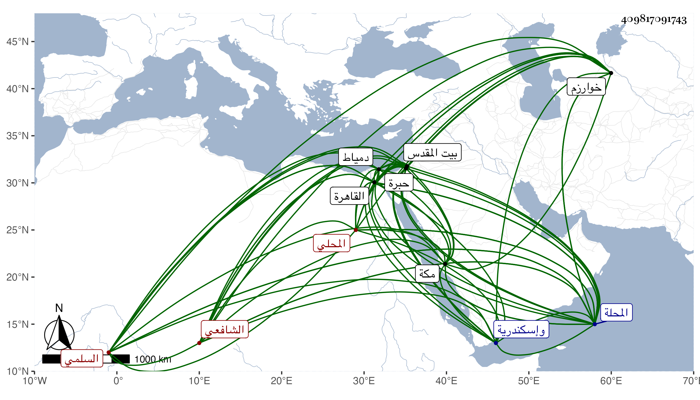

0902Sakhawi.DawLamic.ITO20230111-ara1.EIS1600.409817091743
Biography ID: 409817091743
97
عبد الله بن عبد اللطيف بن أحمد بن محمد بن أبي بكر بن عبد الله بن عبد المحسن المحب أبو الطيب بن البهاء أبي البقاء بن الشهاب أبي العباس السلمي المحلي الشافعي الماضي أبوه والآتي أخوه أبو بكر ويعرف بابن الإمام . ولد في ثامن عشر ذي الحجة سنة ثمان وثمانين وسبعمائة بالمحلة الكبرى ونشأ بها فقرأ القرآن وتلا به لأبي عمرو فيها على الشهاب النشرتي الحيسوب وحفظ بها العمدة والمنهاج الفرعي والأصلي وألفية النحو ، ثم حج به وبأخيه أبوهما في سنة خمس وثمانمائة وجاور وحفظ بمكة أيضا ألفية العراقي وبحثها على الجمال بن ظهيرة والشاطبيتين وعرضهما على الشمس الخوارزمي المعيد وبحث بعضهما عليه وأنشد لنفسه :
| توطن في خير البلاد وجاء من | خوارزم مشتاقا يسمى محمدا |
| إذا هو لم يأنس بشيء من الورى | يؤانسه فضلا وحب محمدا |
وتلا فيها لأبن كثير ونافع على الشهاب القزاز وجود بعض القرآن على الشهاب ابن عياش وسمع بها البخاري وغيره علي ابن صديق والشفا على أبي الطيب المحولي وسمع على أبي اليمن الطبري وغيره وأجاز له آخرون باستدعاء التقي بن فهد ، ورجع إلى المحلة فبحث في الفقه على البهاء أبي البقا الششيني القاضي والشهاب الباريني وغيرهما وفي النحو على البدر حسين المغربي وغيره وكان يتردد إلى القاهرة ومن شيوخه فيها شيخنا والشهاب الواسطي وآخرون ثم قطنها بعد سنة ثلاثين ، وزار القدس والخليل وسمع بالخليل على الشهاب المارديني بعض البخاري ، ودخل دمياط وإسكندرية وغيرهما هو والبقاعى وكان يتردد لهما قبل ذلك ، وكان ثقة مأمونا خيرا متواضعا ناب في القضاء ببعض بلاد المحلة عن الجلال البلقيني فمن بعده ، وحدث قرأ عليه ابن فهد والبقاعي ووصفه بالشيخ الإمام العالم الصالح وغيرهما ومات في يوم الأربعاء ثاني ذي الحجة سنة ست وأربعين بالقاهرة رحمه الله وإيانا .
